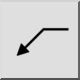

Vodilo
Orodna vrstica / ikona:


Meni: Dimenzija > Vodilo
Bližnjice: D, E | L, D
Ukazi: leader | dimlea | de | ld
Orodna vrstica / ikona:


import LeaderFigure from './LeaderFigure.png';
Vodila so nakazovalne puščice, ki ponavadi povezujejo neko besedilo z nekim drugim objektom. Na primeru nakazuje besedilo "N7" na sestavo površine.
ukazno vrstico.
desni miškin gumb ali pritisnite tipko Escape.